source("_common.r")
list.files("funs", full.names = TRUE) |>
purrr::walk(source)
options(digits = 3)
options(tinytable_tt_digits = 2)Challenge 06 – Solution
“Eine Hackathon-Variante zur Evaluation der Klickdaten des KI-Tools ‘HaNS’”
Betrachten Sie dazu die Targets-Datei auf Github.
1 Setup
1.1 Libs
1.2 Other setup
1.3 Load Targets
tar_load(c(
data_prepped,
visitduration,
time_spent,
time_visit_wday,
time_visit_wday_fingerprint,
course_and_uni_per_visit,
time_spent_w_course_university,
n_action_w_date
))2 Musterlösung
2.1 Berechnen Sie die Verweildauer: Wieviel Zeit verbringen die Nutzer pro Visit?
2.1.1 Spalte visitduration
Dafür gibt es eine Spalte:
visitduration |>
select(visitduration)visitduration_desc <-
visitduration |>
select(visitduration) |>
describe_distribution(centrality = c("mean", "median"))Im Standard wird in Sekunden gezählt.
mean(visitduration$visitduration)
## [1] 1534duration_hms <- function(x) {
s <- round(as.numeric(x))
sprintf(
"%02d:%02d:%02d",
s %/% 3600,
(s %% 3600) %/% 60,
s %% 60
)
}
visitduration_desc[c("Mean", "MAD", "Median", "SD")] <-
lapply(visitduration_desc[c("Mean","MAD", "Median", "SD")], duration_hms)
visitduration_descvisitduration |>
ggplot(aes(x = visitduration)) + # minutes
geom_histogram(binwidth = 10) +
#scale_x_time() +
theme_minimal() +
labs(y = "n", x = "Verweildauer in HaNS pro Visit in hh:mm:ss") +
scale_x_time(breaks = pretty_breaks()) +
geom_vline(xintercept = median(visitduration$visitduration) / 60, color = "blue", linetype = "dashed") +
annotate("label", x = median(visitduration$visitduration) / 60,
y = Inf, label = "Median", vjust = 1.5, color = "blue")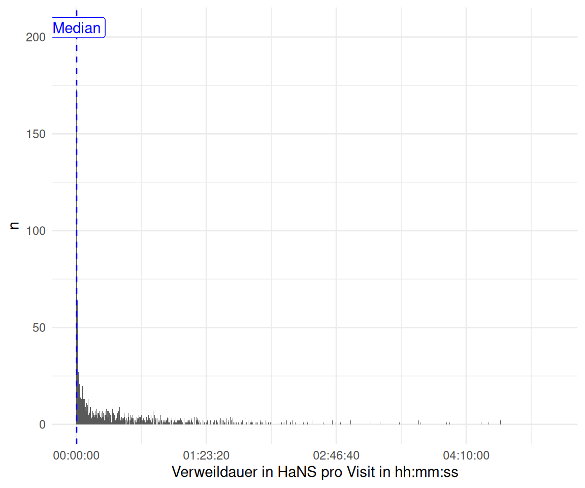
2.1.2 Selbstgebastelt
time_spent_summary <-
time_spent |>
mutate(time_diff_minutes = time_length(time_diff, unit = "minute")) |>
summarise(
mean_time_diff = round(mean(time_diff_minutes), 2),
median_time_diff = round(median(time_diff_minutes, 2)),
iqr_time_diff = round(IQR(time_diff_minutes, 2)),
sd_time_diff = sd(time_diff_minutes),
min_time_diff = min(time_diff_minutes), # shortest duration
max_time_diff = max(time_diff_minutes) # longest
)
time_spent_summary |>
gt() |>
tab_header(title = "Duration statistics per visit (in minutes)")| Duration statistics per visit (in minutes) | |||||
|---|---|---|---|---|---|
| mean_time_diff | median_time_diff | iqr_time_diff | sd_time_diff | min_time_diff | max_time_diff |
| 24.4 | 10 | 34 | 34 | 0 | 306 |
time_spent |>
mutate(time_diff_minutes = time_diff / 60) |>
ggplot(aes(x = time_diff_minutes)) + # minutes
geom_histogram(binwidth = 10) +
#scale_x_time() +
theme_minimal() +
labs(y = "n", x = "Verweildauer in HaNS pro Visit in hh:mm:ss") +
scale_x_time(breaks = pretty_breaks()) +
geom_vline(xintercept = median(time_spent$time_diff) / 60, color = "blue", linetype = "dashed") +
annotate("label", x = median(time_spent$time_diff) / 60,
y = Inf, label = "Median", vjust = 1.5, color = "blue")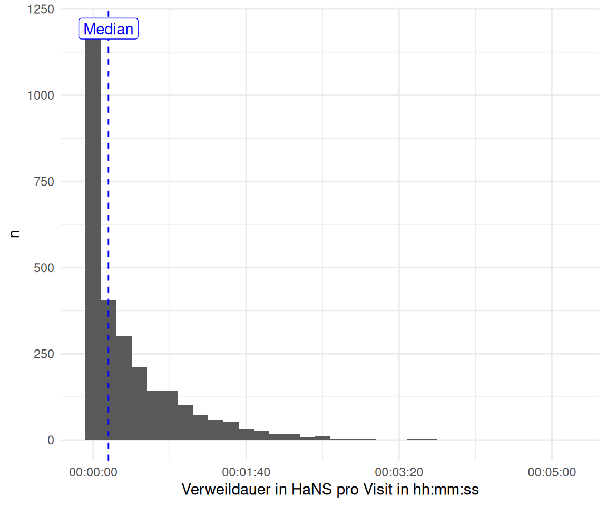
2.2 Berechnen Sie die Verweildauer pro Nutzer. Berichten Sie die Verteilung.
visitduration_by_fingerprint <-
visitduration |>
select(fingerprint, visitduration) |>
group_by(fingerprint) |>
summarise(visitduration = mean(visitduration, na.rm = TRUE))visitduration_by_fingerprint |>
describe_distribution(select = visitduration)2.3 Berechnen Sie die Anzahl der Besuche im Zeitverlauf (pro Woche).
time_spent_by_week <-
time_spent |>
mutate(week_start = floor_date(time_min, "week")) |>
mutate(
week_num = lubridate::week(week_start),
year = lubridate::year(week_start)
) |>
group_by(week_num, year) |>
summarise(
time_spent_week_median = as.numeric(median(time_diff, na.rm = TRUE), units = "mins"),
time_spent_week_sd = sd(time_diff, na.rm = TRUE) / 60,
time_spent_week_iqr = IQR(time_diff, na.rm = TRUE) / 60
) |>
arrange(year, week_num) |>
ungroup()
time_spent_by_week |>
gt() |>
fmt_number(columns = c(3,4, 5),
decimals = 2)| week_num | year | time_spent_week_median | time_spent_week_sd | time_spent_week_iqr |
|---|---|---|---|---|
| 9 | 2025 | 1.28 | 3.96 | 4.17 |
| 10 | 2025 | 7.18 | 27.37 | 11.25 |
| 11 | 2025 | 7.05 | 22.61 | 22.68 |
| 12 | 2025 | 4.92 | 31.61 | 28.31 |
| 13 | 2025 | 13.13 | 32.65 | 39.02 |
| 14 | 2025 | 14.78 | 31.03 | 35.77 |
| 15 | 2025 | 5.22 | 29.53 | 22.01 |
| 16 | 2025 | 12.33 | 28.70 | 28.88 |
| 17 | 2025 | 18.58 | 30.94 | 31.39 |
| 18 | 2025 | 4.23 | 29.84 | 27.58 |
| 19 | 2025 | 8.95 | 33.11 | 38.27 |
| 20 | 2025 | 11.20 | 26.54 | 31.07 |
| 21 | 2025 | 6.03 | 35.38 | 24.60 |
| 22 | 2025 | 20.62 | 31.89 | 49.79 |
| 23 | 2025 | 19.88 | 40.94 | 56.57 |
| 24 | 2025 | 5.35 | 33.90 | 30.80 |
| 25 | 2025 | 4.62 | 15.03 | 17.05 |
| 26 | 2025 | 7.43 | 36.36 | 28.16 |
| 27 | 2025 | 12.28 | 43.13 | 49.60 |
| 28 | 2025 | 26.58 | 63.23 | 96.80 |
time_spent_by_week_start <-
time_spent |>
mutate(week_start = lubridate::floor_date(time_min, "week")) |>
mutate(
week_num = lubridate::week(week_start),
year = lubridate::year(week_start)
) |>
group_by(week_start, year) |>
summarise(
time_spent_week_avg = mean(time_diff, na.rm = TRUE),
time_spent_week_median = median(time_diff, na.rm = TRUE),
time_spent_week_sd = sd(time_diff, na.rm = TRUE)
)
time_spent_by_week_start |>
ggplot(aes(x = week_start, y = time_spent_week_median)) +
geom_line(group = 1, color = "grey60") +
scale_y_time(labels = scales::time_format("%H:%M:%S")) +
labs(x = "Datum", y = "Durchschnittliche Verweildauer pro Visit (in hh:mm:ss)") +
# --- Highlight March–July (approx 1 Mar to 31 Jul) ---
annotate(
"rect",
xmin = as.Date("2023-03-01"),
xmax = as.Date("2023-07-31"),
ymin = -Inf,
ymax = Inf,
alpha = 0.2,
fill = "skyblue"
) +
annotate(
"rect",
xmin = as.Date("2024-03-01"),
xmax = as.Date("2024-07-31"),
ymin = -Inf,
ymax = Inf,
alpha = 0.2,
fill = "skyblue"
) +
annotate(
"rect",
xmin = as.Date("2025-03-01"),
xmax = as.Date("2025-07-31"),
ymin = -Inf,
ymax = Inf,
alpha = 0.2,
fill = "skyblue"
) +
# --- Highlight October–February (semester break or 2nd term) ---
annotate(
"rect",
xmin = as.Date("2023-10-01"),
xmax = as.Date("2024-02-28"),
ymin = -Inf,
ymax = Inf,
alpha = 0.2,
fill = "orange"
) +
# annotate("rect",
# xmin = as.Date("2024-10-01"), xmax = as.Date("2024-02-28"),
# ymin = -Inf, ymax = Inf, alpha = 0.2, fill = "orange") +
annotate(
"rect",
xmin = as.Date("2024-10-01"),
xmax = as.Date("2025-02-28"),
ymin = -Inf,
ymax = Inf,
alpha = 0.2,
fill = "orange"
) +
geom_point()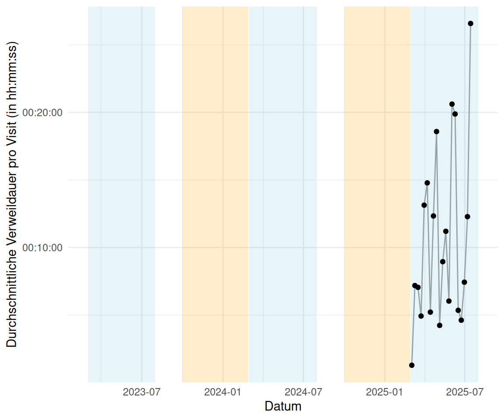
2.4 An welchen Tagen und zu welcher Zeit kommen die Besucher zu HaNS?
# Define a vector with the names of the days of the week
# Note: Adjust the start of the week (Sunday or Monday) as per your requirement
days_of_week <- c(
"Monday",
"Tuesday",
"Wednesday",
"Thursday",
"Friday",
"Saturday",
"Sunday"
)
# Replace numbers with day names
time_visit_wday$dow2 <- factor(
days_of_week[time_visit_wday$dow],
levels = days_of_week
)
time_visit_wday_fingerprint$dow2 <- factor(
days_of_week[time_visit_wday_fingerprint$dow],
levels = days_of_week
)2.5 Zu welchen Uhrzeiten wird die Seite bevorzugt besucht?
time_visit_wday |>
as_tibble() |>
count(hour) |>
mutate(prop = n / sum(n)) |>
ggplot(aes(x = hour, y = prop)) +
geom_col() +
theme_minimal() +
labs(
title = "HaNS-Nutzer sind keine Frühaufsteher",
x = "Uhrzeit",
y = "Anteil"
)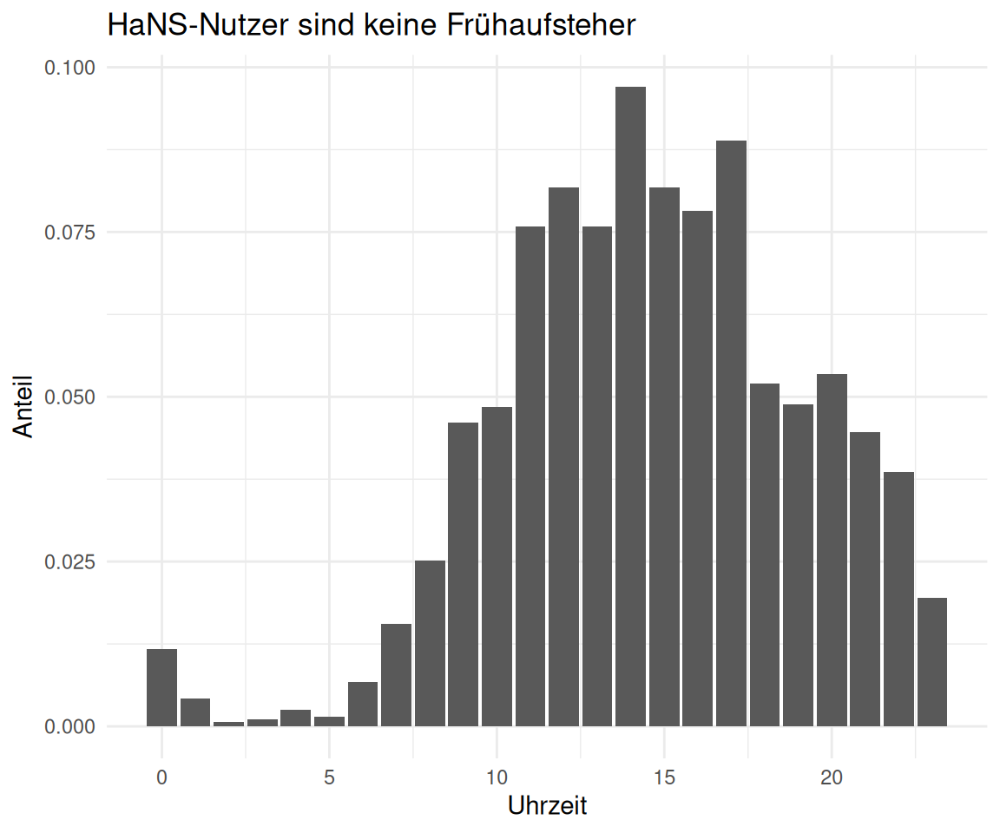
time_visit_wday |>
as_tibble() |>
count(hour) |>
mutate(prop = n / sum(n)) |>
ggplot(aes(x = hour, y = prop)) +
geom_col() +
theme_minimal() +
coord_polar()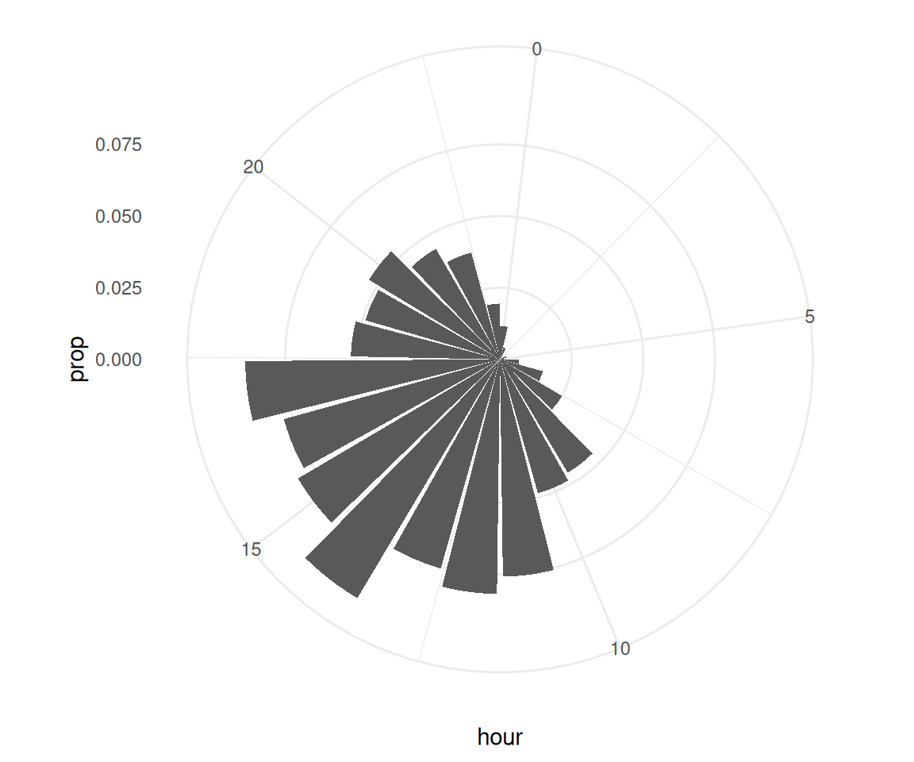
2.6 An welchen Tagen und zu welcher Zeit kommen die Besucher zu HaNS?
time_visit_wday |>
as_tibble() |>
count(dow2) |>
mutate(prop = n / sum(n)) |>
ggplot(aes(x = dow2, y = prop)) +
geom_col() +
theme_minimal() +
labs(
title = "Verteilung der HaNS-Logins nach Wochentagen",
x = "Wochentag",
y = "Anteil"
)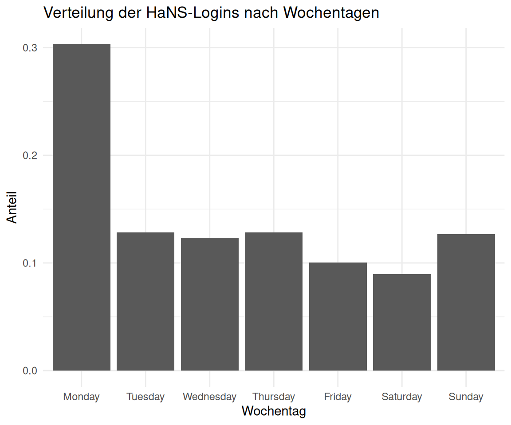
time_visit_wday |>
as_tibble() |>
count(dow2, hour) |>
group_by(dow2) |>
mutate(prop = n / sum(n)) |>
ggplot(aes(x = hour, y = prop)) +
geom_col() +
facet_wrap(~dow2) +
theme_minimal() +
labs(
title = "Verteilung der HaNS-Logins nach Wochentagen und Uhrzeiten",
x = "Wochentag",
y = "Anteil"
)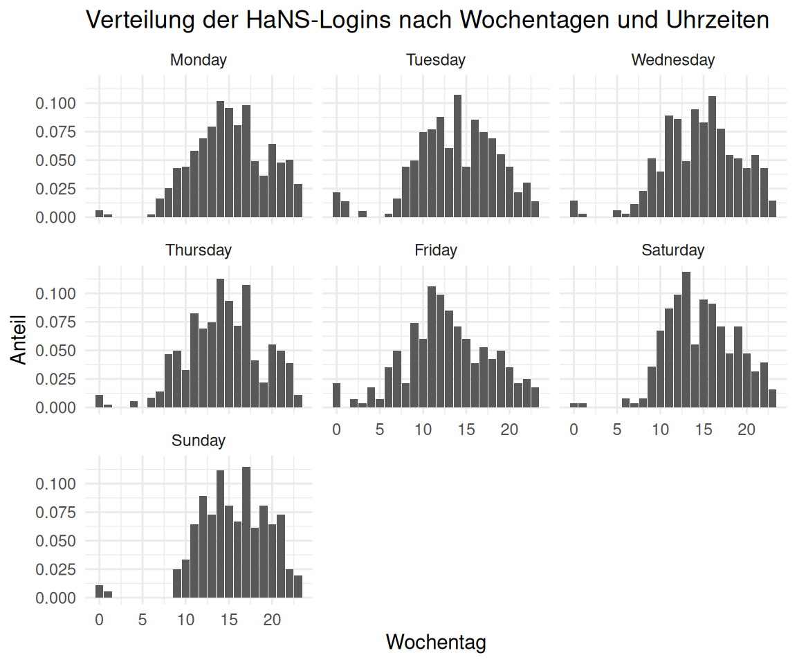
2.7 Wie ist die Verteilung der Visits?
time2 <-
time_visit_wday |>
ungroup() |>
mutate(date = as.Date(date_time)) |>
mutate(month_start = floor_date(date_time, "month"))
time2 |>
ggplot(aes(x = date, y = hour)) +
geom_bin2d(binwidth = c(1, 1)) + # (1 day, 1 hour)
scale_x_date(date_breaks = "1 month") +
theme(legend.position = "bottom") +
scale_fill_viridis_c() +
labs(caption = "Each x-bin maps to one week") +
scale_x_date(breaks = breaks_pretty()) +
labs(
caption = "Vertical dashed lines shows the median.",
title = "Most users to only a few actions, but some do many.",
x = "Number of actions per visit",
y = "Number of visits"
) +
# --- Highlight March–July (approx 1 Mar to 31 Jul) ---
annotate(
"rect",
xmin = as.Date("2023-03-01"),
xmax = as.Date("2023-07-31"),
ymin = -Inf,
ymax = Inf,
alpha = 0.2,
fill = "skyblue"
) +
annotate(
"rect",
xmin = as.Date("2024-03-01"),
xmax = as.Date("2024-07-31"),
ymin = -Inf,
ymax = Inf,
alpha = 0.2,
fill = "skyblue"
) +
annotate(
"rect",
xmin = as.Date("2025-03-01"),
xmax = as.Date("2025-07-31"),
ymin = -Inf,
ymax = Inf,
alpha = 0.2,
fill = "skyblue"
) +
# --- Highlight October–February (semester break or 2nd term) ---
annotate(
"rect",
xmin = as.Date("2023-10-01"),
xmax = as.Date("2024-02-28"),
ymin = -Inf,
ymax = Inf,
alpha = 0.2,
fill = "orange"
) +
# annotate("rect",
# xmin = as.Date("2024-10-01"), xmax = as.Date("2024-02-28"),
# ymin = -Inf, ymax = Inf, alpha = 0.2, fill = "orange") +
annotate(
"rect",
xmin = as.Date("2024-10-01"),
xmax = as.Date("2025-02-28"),
ymin = -Inf,
ymax = Inf,
alpha = 0.2,
fill = "orange"
) +
geom_smooth(method = "loess", se = FALSE, color = "blue") +
scale_x_date(limits = as.Date(c("2025-03-02", "2025-07-13")))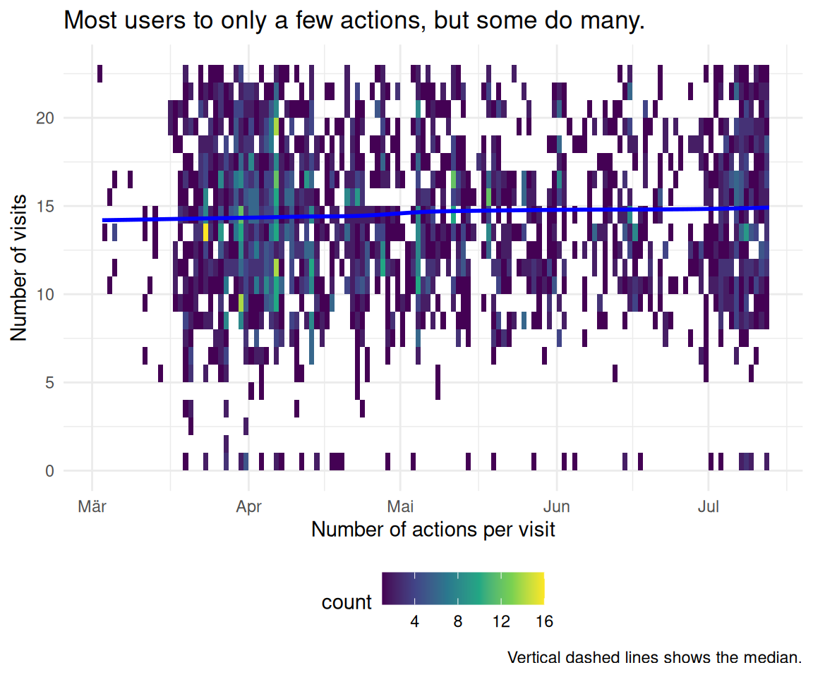
2.8 Geben Sie den Zeitraum der Nutzung an (von bis ). Hier geht es um insgesamte erste (bzw. letzte) Nutzung über alle User hinweg. Gefragt ist der älteste und neueste Time Stamp, den der Server insgesamt/überhaupt protokolliert hat.
min_max_time <-
n_action_w_date |>
summarise(
time_min = min(date_time_start, na.rm = T),
time_max = max(date_time_start, na.rm = T)
)
min_max_time |>
gt()| time_min | time_max |
|---|---|
| 2025-03-03 23:04:49 | 2025-07-14 23:40:45 |
2.9 Wie ist die Verteilung der Visits?
Hier im Zeitverlauf
time_visit_wday_summary_week <-
time_visit_wday |>
ungroup() |>
mutate(week_start = floor_date(date_time, "week")) |>
mutate(week_num = week(date_time), year_num = year(date_time))
time_visit_wday_summary_week_summarized_dateformat <-
time_visit_wday_summary_week |>
group_by(week_start) |>
summarise(n = n())time_visit_wday_summary_week_summarized_dateformat_plot <-
time_visit_wday_summary_week_summarized_dateformat |>
ggplot(aes(x = week_start, y = n)) +
geom_line(group = 1, color = "grey60") +
geom_point() +
geom_smooth(method = "gam", se = FALSE, color = "blue") +
labs(
title = "The number of visits is increasing and reflects the teaching periods of the semesters.",
x = "week number/year"
) +
# --- Highlight March–July (approx 1 Mar to 31 Jul) ---
annotate(
"rect",
xmin = as.Date("2023-03-01"),
xmax = as.Date("2023-07-31"),
ymin = -Inf,
ymax = Inf,
alpha = 0.2,
fill = "skyblue"
) +
annotate(
"rect",
xmin = as.Date("2024-03-01"),
xmax = as.Date("2024-07-31"),
ymin = -Inf,
ymax = Inf,
alpha = 0.2,
fill = "skyblue"
) +
annotate(
"rect",
xmin = as.Date("2025-03-01"),
xmax = as.Date("2025-07-31"),
ymin = -Inf,
ymax = Inf,
alpha = 0.2,
fill = "skyblue"
) +
# --- Highlight October–February (semester break or 2nd term) ---
annotate(
"rect",
xmin = as.Date("2023-10-01"),
xmax = as.Date("2024-02-28"),
ymin = -Inf,
ymax = Inf,
alpha = 0.2,
fill = "orange"
) +
# annotate("rect",
# xmin = as.Date("2024-10-01"), xmax = as.Date("2024-02-28"),
# ymin = -Inf, ymax = Inf, alpha = 0.2, fill = "orange") +
annotate(
"rect",
xmin = as.Date("2024-10-01"),
xmax = as.Date("2025-02-28"),
ymin = -Inf,
ymax = Inf,
alpha = 0.2,
fill = "orange"
)
time_visit_wday_summary_week_summarized_dateformat_plot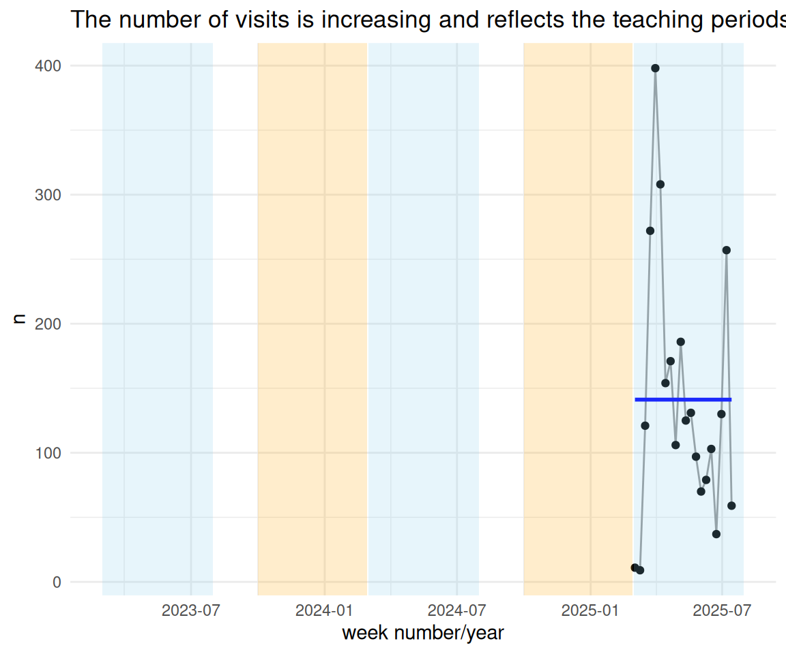
time_visit_wday_summary_week_summarized_dateformat_plot +
scale_x_date(limits = as.Date(c("2025-03-02", "2025-07-13")))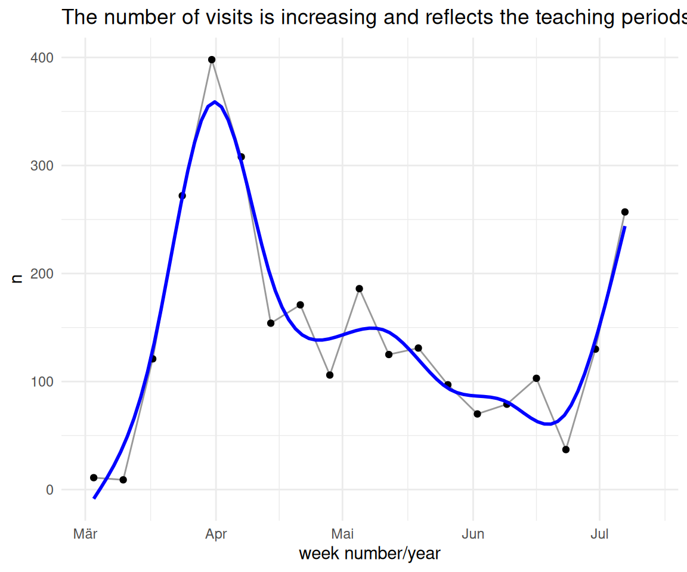
2.10 Brechen Sie die Verteilung der Visits auf nach folgenden Untergruppen: Module und Hochschule.
2.10.1 Hochschule
course_and_uni_per_visit |>
count(university, sort = TRUE) |>
gt()| university | n |
|---|---|
| NA | 1114 |
| th-nuernberg | 850 |
| hswt | 845 |
| hnu | 9 |
| evhn | 4 |
| th-owl | 1 |
| thi | 1 |
course_and_uni_per_visit |>
count(university) |>
drop_na() |>
ggplot(aes(y = reorder(university, n), x = n)) +
geom_col() +
theme_minimal() +
labs(
title = "TH Nürnberg hosts the most courses on HaNS by far.",
y = "University"
)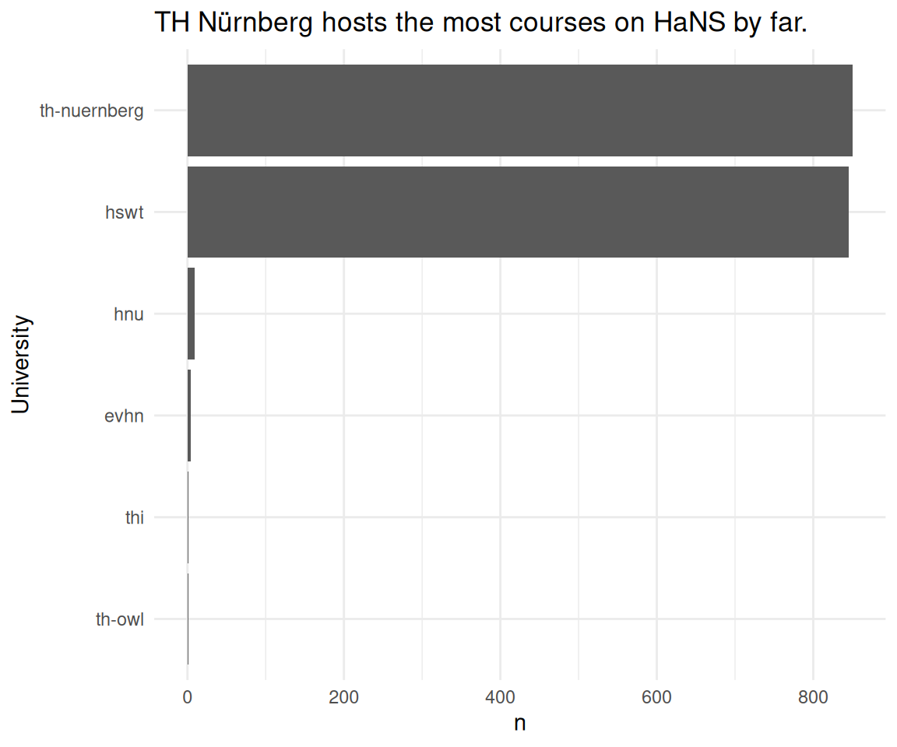
2.10.2 Module
time_spent_w_course_university |>
count(course, sort = TRUE) |>
gt()| course | n |
|---|---|
| NA | 8379 |
| gesoa | 2336 |
| cta1 | 1109 |
| mioek | 437 |
| fodesoa | 325 |
| thesoa | 283 |
| biovete | 244 |
| mibio | 206 |
| daba | 198 |
| bio | 168 |
| biotech | 127 |
| nlp | 67 |
| fosaq | 60 |
| gemwesa | 57 |
| gdi | 48 |
| anis2 | 43 |
| quanch | 34 |
| wisoa | 33 |
| bare | 13 |
| enerbi | 10 |
| fomesoa | 6 |
| wirkori | 5 |
| softa | 4 |
| etechde | 3 |
| kore | 3 |
| quame1 | 3 |
| armeufa | 2 |
| mat11akzg | 2 |
| epsy | 1 |
| zemiws | 1 |
time_spent_w_course_university |>
count(year, course) |>
drop_na() |>
ggplot(aes(x = n, y = course, fill = factor(year), )) +
geom_col(position = "dodge") +
labs(title = "The course 'GeSOA' is the most active course on HaNS.",
fill = "Jahr") +
theme(legend.position = c(.9, .9),
legend.justification = c("right", "top"))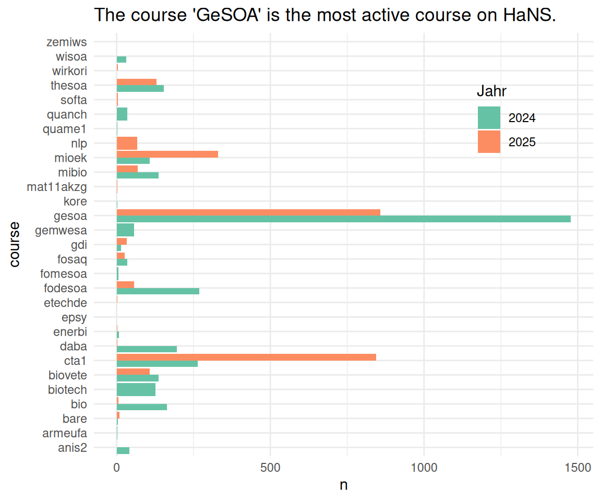
2.11 Unterscheiden sich die Anzahl der Visits zwischen Vorlesungszeit und Semesterferien?
Keine Vorlesungszeit in den Daten enthalten
2.12 Verändert sich die Verweildauer im Zeitverlauf (nimmt sie zu oder ab?)? Analysebasis: Woche. Berechnen Sie eine Regression dazu.
time_spent_by_week |>
ggplot(aes(x = week_num, y = time_spent_week_median)) +
geom_point() +
geom_smooth(method = "lm")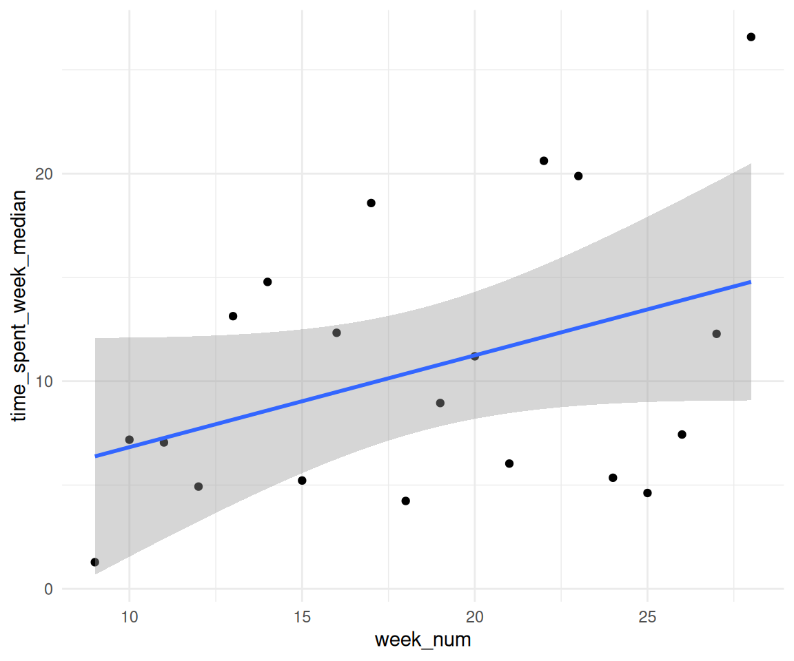
lm_visitduration_by_week <-
lm(time_spent_week_median ~ week_num, data = time_spent_by_week)
parameters(lm_visitduration_by_week) |>
print_md()| Parameter | Coefficient | SE | 95% CI | t(18) | p |
|---|---|---|---|---|---|
| (Intercept) | 2.40 | 4.74 | (-7.55, 12.35) | 0.51 | 0.618 |
| week num | 0.44 | 0.24 | (-0.07, 0.96) | 1.81 | 0.087 |
2.13 Gibt es einen statistischen Zusammenhang von Modul/Lehrveranstaltung und Verweildauer?
time_spent_w_course_university_summary <-
time_spent_w_course_university |>
group_by(floor_date_month) |>
summarise(
distinct_courses_n = n_distinct(course),
diff_time_mean = round(mean(time_diff, na.rm = TRUE), 2),
n = n()
)
time_spent_w_course_university_summary |>
gt() |>
fmt_number(columns = where(is.numeric),
decimals = 2)| floor_date_month | distinct_courses_n | diff_time_mean | n |
|---|---|---|---|
| 2022-12-01 | 1.00 | 1771.4 | 329.00 |
| 2023-01-01 | 1.00 | 2063.35 | 455.00 |
| 2023-02-01 | 1.00 | 2098.29 | 561.00 |
| 2023-03-01 | 1.00 | 987.73 | 149.00 |
| 2023-04-01 | 1.00 | 1172.55 | 253.00 |
| 2023-05-01 | 1.00 | 2051.09 | 391.00 |
| 2023-06-01 | 1.00 | 2349.46 | 292.00 |
| 2023-07-01 | 1.00 | 1884.18 | 441.00 |
| 2023-08-01 | 1.00 | 1219.23 | 26.00 |
| 2023-09-01 | 1.00 | 315.18 | 39.00 |
| 2023-10-01 | 1.00 | 1545 | 614.00 |
| 2023-11-01 | 1.00 | 1856 | 660.00 |
| 2023-12-01 | 1.00 | 2094.81 | 519.00 |
| 2024-01-01 | 1.00 | 1890.99 | 783.00 |
| 2024-02-01 | 1.00 | 2373.31 | 85.00 |
| 2024-03-01 | 11.00 | 490.81 | 138.00 |
| 2024-04-01 | 13.00 | 850.54 | 329.00 |
| 2024-05-01 | 14.00 | 2362.88 | 413.00 |
| 2024-06-01 | 14.00 | 2115.43 | 593.00 |
| 2024-07-01 | 14.00 | 2415.87 | 743.00 |
| 2024-08-01 | 3.00 | 149.5 | 16.00 |
| 2024-09-01 | 3.00 | 327.96 | 23.00 |
| 2024-10-01 | 12.00 | 1440.25 | 731.00 |
| 2024-11-01 | 10.00 | 1863.21 | 918.00 |
| 2024-12-01 | 10.00 | 2016.26 | 765.00 |
| 2025-01-01 | 14.00 | 1957.38 | 959.00 |
| 2025-02-01 | 6.00 | 1942.01 | 155.00 |
| 2025-03-01 | 11.00 | 1277.06 | 507.00 |
| 2025-04-01 | 12.00 | 1424.26 | 1,011.00 |
| 2025-05-01 | 10.00 | 1288.53 | 557.00 |
| 2025-06-01 | 9.00 | 1622.21 | 321.00 |
| 2025-07-01 | 11.00 | 1884.97 | 430.00 |
| NA | 1.00 | NaN | 1.00 |
time_spent_w_course_university_summary |>
ggplot(aes(x = distinct_courses_n, y = diff_time_mean)) +
geom_point() +
scale_y_time(labels = scales::time_format("%M:%S")) +
labs(
y = "Average visit duration (m:s)",
x = "No. of distinct courses per month"
)
time_spent_w_course_university_summary |>
mutate(diff_time_mean_num = as.numeric(diff_time_mean)) |>
correlation()2.14 Gibt es einen statistischen Zusammenhang von Modul/Lehrveranstaltung und der Anzahl der Visits?
time_spent_w_course_university_summary |>
ggplot(aes(x = distinct_courses_n, y = n)) +
geom_point() +
labs(y = "No. of visits per month", x = "No. of distinct courses per month")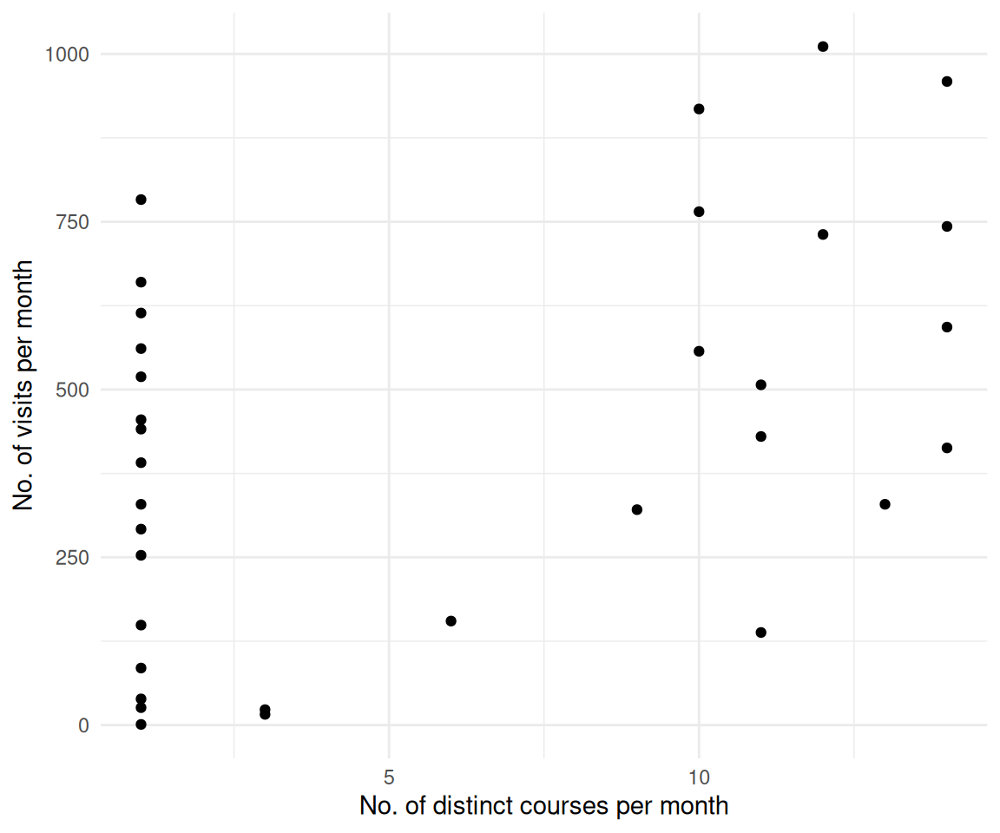
3 Debrief
3.1 Targets-Objekte
targets::tar_manifest() |>
select(name) |>
#print(n = Inf) |>
knitr::kable()| name |
|---|
| config_file |
| config |
| data_files_list |
| data_files_dupes_excluded |
| data_imported |
| data_prepped |
| data_all_fct |
| test_unique_idvisit |
| visitduration |
| data_long |
| data_wide_slim |
| data_separated |
| n_visits |
| course_and_uni_per_visit |
| data_separated_filtered |
| n_action_fingerprint |
| time_spent |
| time_visit_wday_fingerprint |
| n_action |
| n_action_w_date |
| time_spent_fingerprint |
| time_visit_wday |
| n_action_lt_500_fingerprint |
| n_action_lt_500 |
3.2 Pipeline-Graph
tar_visnetwork(targets_only = TRUE,
outdated = TRUE)tar_glimpse()3.3 sessionInfo
sessioninfo::session_info()
## ─ Session info ───────────────────────────────────────────────────────────────
## setting value
## version R version 4.5.1 (2025-06-13)
## os Ubuntu 25.10
## system x86_64, linux-gnu
## ui X11
## language (EN)
## collate de_DE.UTF-8
## ctype de_DE.UTF-8
## tz Europe/Berlin
## date 2025-12-15
## pandoc 3.6.3 @ /snap/rstudio/25/resources/app/bin/quarto/bin/tools/x86_64/ (via rmarkdown)
## quarto 1.7.32 @ /snap/rstudio/25/resources/app/bin/quarto/bin/quarto
##
## ─ Packages ───────────────────────────────────────────────────────────────────
## package * version date (UTC) lib source
## abind 1.4-8 2024-09-12 [3] CRAN (R 4.4.1)
## backports 1.5.0 2024-05-23 [3] CRAN (R 4.4.1)
## base64url 1.4 2018-05-14 [3] CRAN (R 4.0.1)
## bayestestR * 0.17.0 2025-08-29 [1] RSPM (R 4.5.1)
## broom 1.0.10 2025-09-13 [1] RSPM
## callr 3.7.6 2024-03-25 [3] CRAN (R 4.4.0)
## car 3.1-3 2024-09-27 [3] CRAN (R 4.4.1)
## carData 3.0-5 2022-01-06 [3] CRAN (R 4.1.2)
## cli 3.6.5 2025-04-23 [1] CRAN (R 4.5.1)
## coda 0.19-4.1 2024-01-31 [1] RSPM
## codetools 0.2-20 2024-03-31 [4] CRAN (R 4.3.3)
## correlation * 0.8.8 2025-07-08 [1] RSPM (R 4.5.1)
## data.table 1.17.8 2025-07-10 [1] RSPM (R 4.5.1)
## datawizard * 1.3.0 2025-10-11 [1] RSPM (R 4.5.1)
## dichromat 2.0-0.1 2022-05-02 [3] CRAN (R 4.2.0)
## digest 0.6.39 2025-11-19 [1] CRAN (R 4.5.1)
## dplyr * 1.1.4 2023-11-17 [3] CRAN (R 4.4.2)
## easystats * 0.7.5 2025-07-11 [1] RSPM (R 4.5.1)
## effectsize * 1.0.1 2025-05-27 [1] RSPM (R 4.5.1)
## emmeans 1.10.7 2025-01-31 [3] CRAN (R 4.4.2)
## estimability 1.5.1 2024-05-12 [3] CRAN (R 4.4.2)
## evaluate 1.0.5 2025-08-27 [1] CRAN (R 4.5.1)
## farver 2.1.2 2024-05-13 [3] CRAN (R 4.4.1)
## fastmap 1.2.0 2024-05-15 [3] CRAN (R 4.4.1)
## forcats * 1.0.0 2023-01-29 [3] CRAN (R 4.2.2)
## Formula 1.2-5 2023-02-24 [3] CRAN (R 4.2.2)
## fs 1.6.6 2025-04-12 [1] CRAN (R 4.5.1)
## generics 0.1.4 2025-05-09 [1] CRAN (R 4.5.1)
## ggplot2 * 4.0.1 2025-11-14 [1] RSPM (R 4.5.1)
## ggpubr * 0.6.2 2025-10-17 [1] RSPM
## ggsignif 0.6.4 2022-10-13 [3] CRAN (R 4.2.2)
## ggstatsplot * 0.13.3 2025-10-05 [1] RSPM
## glue 1.8.0 2024-09-30 [3] CRAN (R 4.4.2)
## gt * 1.1.0 2025-09-23 [1] RSPM (R 4.5.1)
## gtable 0.3.6 2024-10-25 [3] CRAN (R 4.4.2)
## hms 1.1.3 2023-03-21 [3] CRAN (R 4.3.1)
## htmltools 0.5.8.1 2024-04-04 [3] CRAN (R 4.4.0)
## htmlwidgets 1.6.4 2023-12-06 [3] CRAN (R 4.3.2)
## igraph 2.1.4 2025-01-23 [3] CRAN (R 4.5.0)
## insight * 1.4.2 2025-09-02 [1] RSPM (R 4.5.1)
## jsonlite 2.0.0 2025-03-27 [1] CRAN (R 4.5.1)
## knitr 1.50 2025-03-16 [3] CRAN (R 4.4.3)
## labeling 0.4.3 2023-08-29 [3] CRAN (R 4.3.1)
## lattice 0.22-7 2025-04-02 [4] CRAN (R 4.4.3)
## lifecycle 1.0.4 2023-11-07 [3] CRAN (R 4.3.2)
## lubridate * 1.9.4 2024-12-08 [3] CRAN (R 4.4.2)
## magrittr 2.0.4 2025-09-12 [1] CRAN (R 4.5.1)
## MASS 7.3-65 2025-02-28 [4] CRAN (R 4.4.3)
## Matrix 1.7-3 2025-03-11 [4] CRAN (R 4.4.3)
## mgcv 1.9-3 2025-04-04 [4] CRAN (R 4.4.3)
## modelbased * 0.13.0 2025-08-30 [1] RSPM (R 4.5.1)
## multcomp 1.4-28 2025-01-29 [3] CRAN (R 4.4.2)
## mvtnorm 1.3-3 2025-01-10 [1] RSPM
## nlme 3.1-168 2025-03-31 [4] CRAN (R 4.4.3)
## paletteer 1.6.0 2024-01-21 [1] RSPM
## parameters * 0.28.2 2025-09-10 [1] RSPM (R 4.5.1)
## patchwork 1.3.2 2025-08-25 [1] RSPM (R 4.5.1)
## performance * 0.15.2 2025-10-06 [1] RSPM (R 4.5.1)
## pillar 1.11.1 2025-09-17 [1] CRAN (R 4.5.1)
## pkgconfig 2.0.3 2019-09-22 [3] CRAN (R 4.0.1)
## prettyunits 1.2.0 2023-09-24 [3] CRAN (R 4.3.1)
## processx 3.8.6 2025-02-21 [3] CRAN (R 4.4.3)
## ps 1.9.0 2025-02-18 [3] CRAN (R 4.4.3)
## purrr * 1.2.0 2025-11-04 [1] RSPM (R 4.5.1)
## R6 2.6.1 2025-02-15 [3] CRAN (R 4.4.3)
## RColorBrewer 1.1-3 2022-04-03 [3] CRAN (R 4.2.0)
## RcppParallel 5.1.7 2023-02-27 [3] CRAN (R 4.5.0)
## readr * 2.1.6 2025-11-14 [1] RSPM
## rematch2 2.1.2 2020-05-01 [3] CRAN (R 4.0.1)
## report * 0.6.2 2025-11-03 [1] RSPM (R 4.5.1)
## rlang 1.1.6 2025-04-11 [1] CRAN (R 4.5.1)
## rmarkdown 2.30 2025-09-28 [1] RSPM (R 4.5.1)
## rstantools 2.4.0 2024-01-31 [3] CRAN (R 4.3.2)
## rstatix 0.7.2 2023-02-01 [3] CRAN (R 4.2.2)
## rstudioapi 0.17.1 2024-10-22 [3] CRAN (R 4.4.1)
## S7 0.2.1 2025-11-14 [1] RSPM (R 4.5.1)
## sandwich 3.1-1 2024-09-15 [3] CRAN (R 4.4.1)
## sass 0.4.10 2025-04-11 [1] RSPM (R 4.5.1)
## scales * 1.4.0 2025-04-24 [1] RSPM (R 4.5.1)
## secretbase 1.0.5 2025-03-04 [1] RSPM
## see * 0.12.0 2025-09-14 [1] RSPM (R 4.5.1)
## sessioninfo 1.2.3 2025-02-05 [3] CRAN (R 4.4.3)
## statsExpressions 1.7.1 2025-07-27 [1] RSPM
## stringi 1.8.7 2025-03-27 [1] CRAN (R 4.5.1)
## stringr * 1.6.0 2025-11-04 [1] CRAN (R 4.5.1)
## survival 3.8-3 2024-12-17 [4] CRAN (R 4.4.2)
## targets * 1.11.4 2025-09-13 [1] RSPM
## TH.data 1.1-3 2025-01-17 [3] CRAN (R 4.4.2)
## tibble * 3.3.0 2025-06-08 [1] CRAN (R 4.5.1)
## tidyr * 1.3.1 2024-01-24 [3] CRAN (R 4.3.2)
## tidyselect 1.2.1 2024-03-11 [3] CRAN (R 4.4.0)
## tidyverse * 2.0.0 2023-02-22 [3] CRAN (R 4.4.2)
## timechange 0.3.0 2024-01-18 [3] CRAN (R 4.4.3)
## tzdb 0.5.0 2025-03-15 [3] CRAN (R 4.4.3)
## vctrs 0.6.5 2023-12-01 [3] CRAN (R 4.3.2)
## viridisLite 0.4.2 2023-05-02 [3] CRAN (R 4.3.1)
## visdat * 0.6.0 2023-02-02 [1] CRAN (R 4.5.1)
## visNetwork 2.1.2 2022-09-29 [3] CRAN (R 4.4.1)
## withr 3.0.2 2024-10-28 [3] CRAN (R 4.4.1)
## xfun 0.54 2025-10-30 [1] CRAN (R 4.5.1)
## xml2 1.5.0 2025-11-17 [1] CRAN (R 4.5.1)
## xtable 1.8-4 2019-04-21 [3] CRAN (R 4.0.1)
## yaml 2.3.10 2024-07-26 [3] CRAN (R 4.4.1)
## zeallot 0.2.0 2025-05-27 [1] RSPM
## zoo 1.8-14 2025-04-10 [3] CRAN (R 4.4.3)
##
## [1] /home/sebastian-sauer/R/x86_64-pc-linux-gnu-library/4.5
## [2] /usr/local/lib/R/site-library
## [3] /usr/lib/R/site-library
## [4] /usr/lib/R/library
## * ── Packages attached to the search path.
##
## ──────────────────────────────────────────────────────────────────────────────Wiederverwendung
MIT
Zitat
Mit BibTeX zitieren:
@online{sauer,
author = {Sauer, Sebastian},
title = {Challenge 06 -\/- Solution},
date = {},
url = {https://sebastiansauer.github.io/hans-hackathon2025/challenge06-solution.html},
langid = {de-DE}
}
Bitte zitieren Sie diese Arbeit als:
Sauer, Sebastian. n.d. “Challenge 06 -- Solution.” https://sebastiansauer.github.io/hans-hackathon2025/challenge06-solution.html.